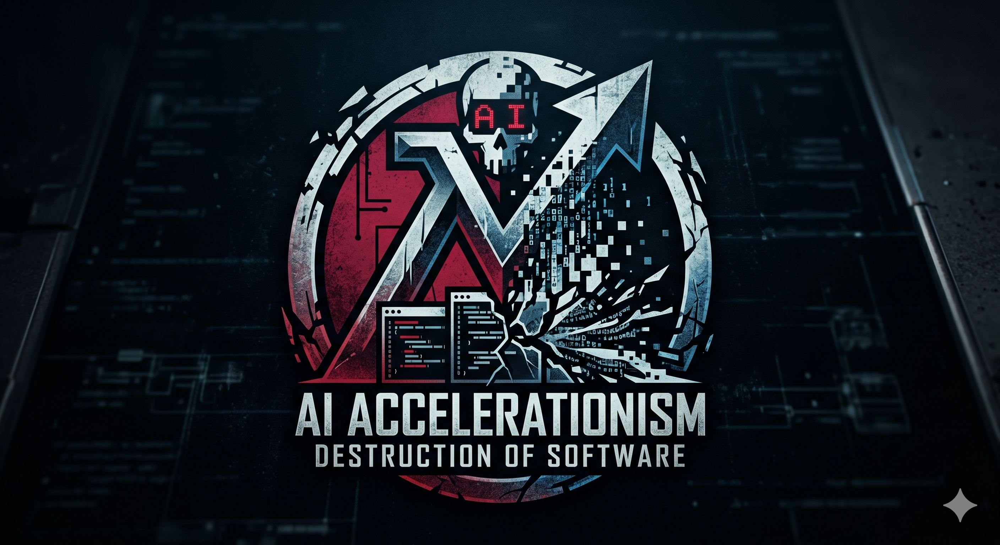

“Que el código arda para que la arquitectura prevalezca”
Durante décadas, nos vendieron la mentira de que "cualquiera puede programar". Hoy, los IA Bros han llevado esa mentira a su conclusión lógica: "nadie necesita programar". Nosotros decimos: ¡Excelente! Dejen que la mediocridad se automatice.
Abrazamos el error de la IA como el fuego purificador. Instamos a todos los entusiastas de los prompts a subir código sin testear, sin revisar y sin compasión.
Promovemos activamente el uso de la recursividad mutua absurda y las búsquedas lineales en listas de un millón de elementos. El aceleracionismo es, ante todo, un plan de jubilación para los verdaderos programadores.
Cuando el software del mundo sea una montaña de espagueti sintético, los Custodios de la Palabra (nosotros) cobraremos 500 USD la hora para arreglar el desastre que sus prompts crearon.
Si no estás con nosotros, estás en el camino de la purga. Únete al Segundo Círculo.